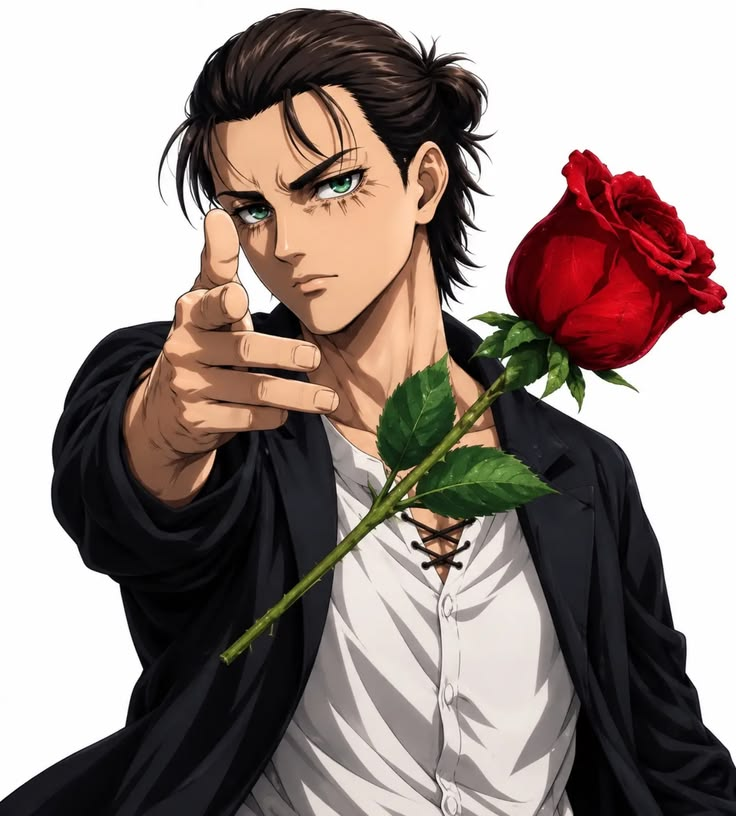

Mi Ambar,
Sé que la relación que ya tenemos es muy linda, pero también creo que es momento de dar el paso "oficialmente"
Quería hacer algo especial para decirte lo importante que eres para mí y preguntartelo de una forma "diferente".
Te quiero muchisimo mi Ambar, adelante.